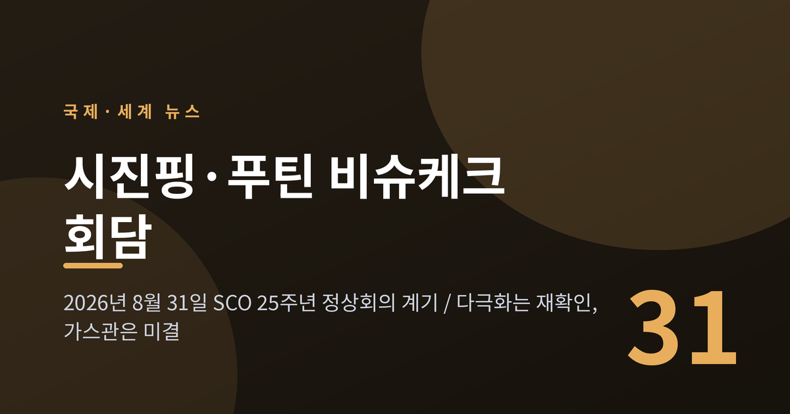
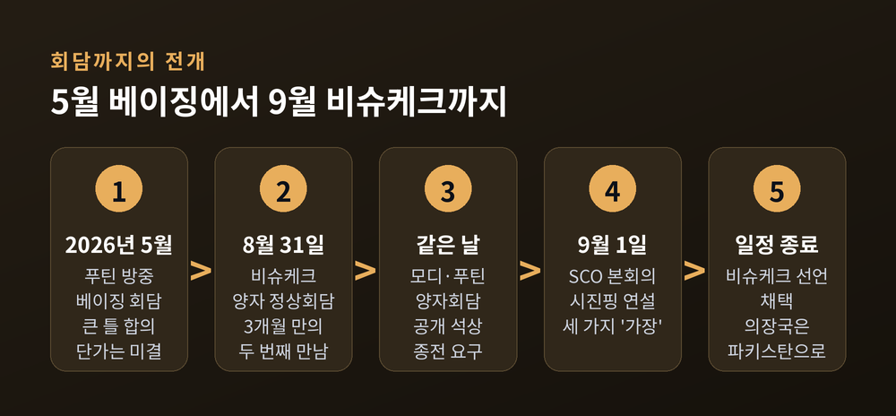
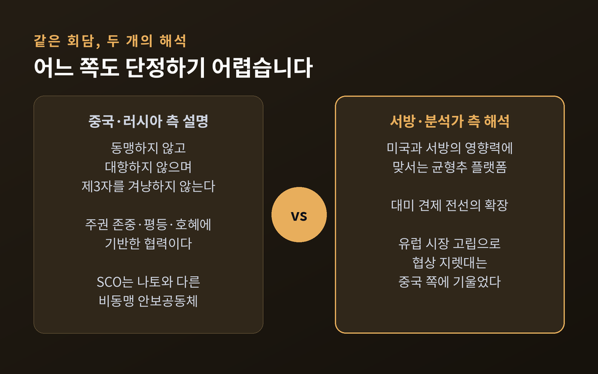
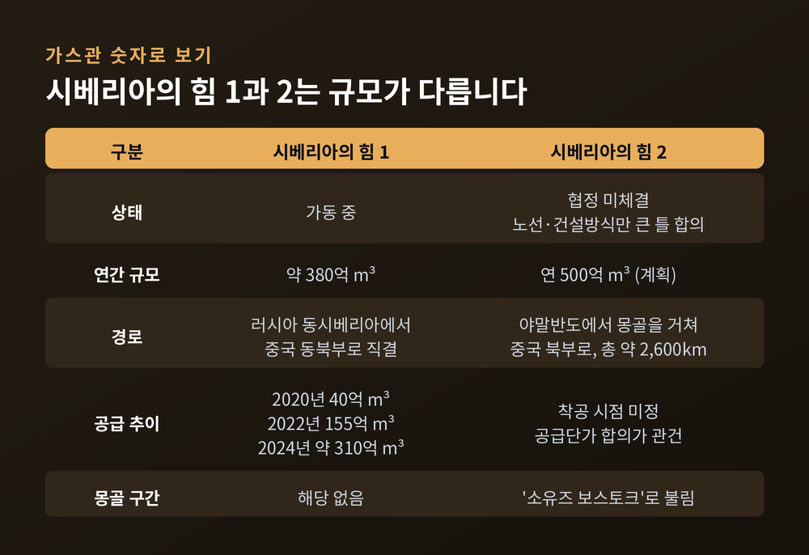
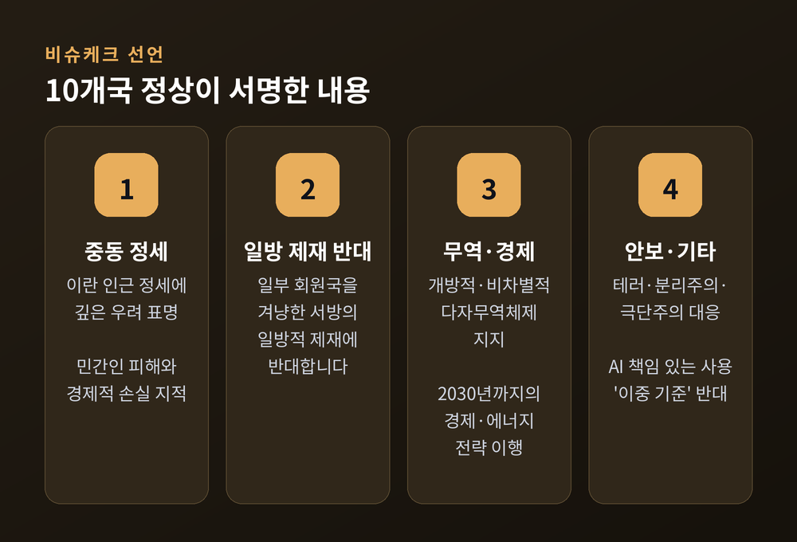
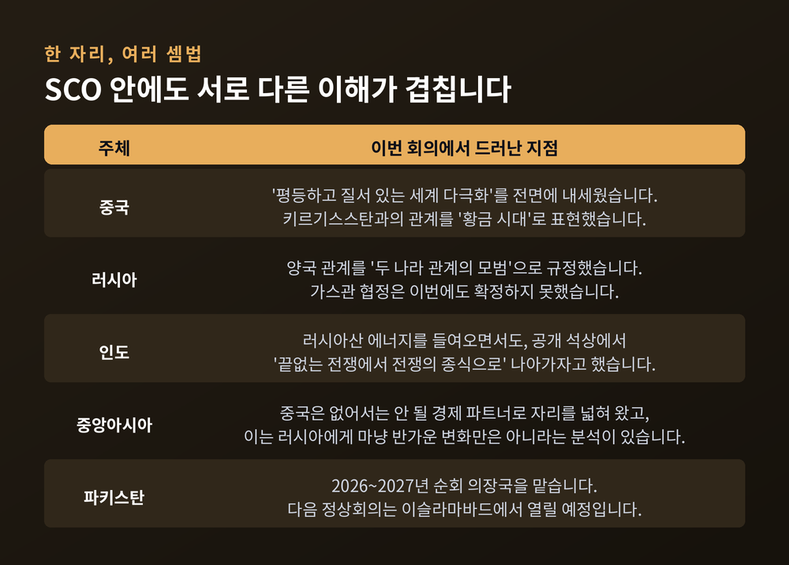
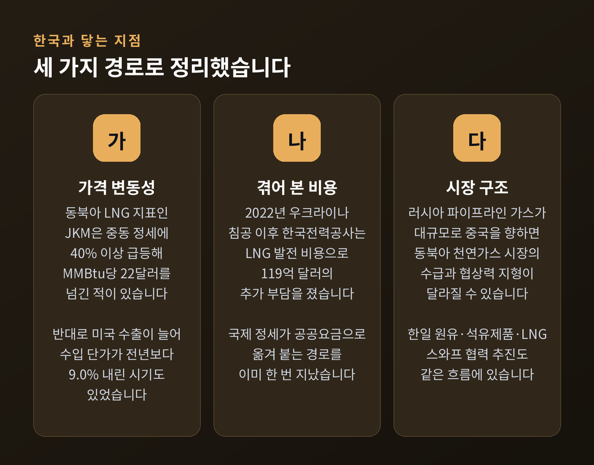

시진핑 푸틴 비슈케크 회담, 다극화는 확인했고 가스관은 남겼습니다

이번 글에서는 2026년 8월 31일 키르기스스탄 비슈케크에서 열린 시진핑 중국 국가주석과 푸틴 러시아 대통령의 정상회담을 정리해 보겠습니다. 무슨 일이 있었는지부터 시작해, 두 나라가 왜 지금 다시 마주 앉았는지, 최대 현안이던 가스관은 어떻게 됐는지, 그리고 한국에는 어떤 의미인지까지 차례로 짚어보겠습니다.
세 줄 요약
- 두 정상은 8월 31일 비슈케크에서 만나 '세계 다극화'와 전략적 협력 강화를 재확인했습니다. 5월 베이징 회담 이후 약 3개월 만, 올해 두 번째 만남입니다.
- 최대 관심사였던 '시베리아의 힘-2' 가스관은 이번에도 최종 협정 체결에 이르지 못했습니다. 노선과 건설 방식은 큰 틀에서 합의됐지만 착공 시점과 가격은 남았습니다.
- 회원국 10개국이 채택한 '비슈케크 선언'에는 이란 관련 우려와 일방적 제재 반대가 담겼습니다. 반면 우크라이나 분쟁에 대한 언급은 없었습니다.
8월 31일 비슈케크에서 있었던 일
비슈케크는 키르기스스탄의 수도입니다.
이곳에서 8월 31일부터 9월 1일까지 이틀간 제26차 상하이협력기구(SCO) 정상회의가 열렸습니다. 올해는 SCO 창설 25주년이었고, 주제는 '지속가능한 평화·발전·번영'이었습니다. 개최국 정상은 사디르 자파로프 키르기스스탄 대통령이었습니다.
시진핑 주석과 푸틴 대통령의 정상회담은 이 다자회의를 계기로 열린 양자회담이었습니다. 두 정상이 마주 앉은 것은 지난 5월 푸틴 대통령의 중국 국빈방문 이후 약 3개월 만이며, 올해 들어 두 번째입니다.
비슈케크에는 두 사람 말고도 여러 정상이 모였습니다. 나렌드라 모디 인도 총리, 셰바즈 샤리프 파키스탄 총리, 마수드 페제시키안 이란 대통령, 레제프 타이이프 에르도안 튀르키예 대통령이 자리를 함께했습니다. 회원국 10개국 정상이 모두 참석한 자리였습니다.
키르기스스탄이 SCO 정상회의를 주최한 것은 이번이 네 번째입니다. 순회 의장국은 이 회의를 끝으로 2026~2027년 파키스탄에게 넘어갔고, 다음 정상회의는 이슬라마바드에서 열릴 예정입니다.

두 정상이 꺼낸 공통의 단어, '다극화'
이번 회담에서 두 정상이 함께 쓴 단어가 있습니다. 다극화입니다.
시 주석은 회담에서 글로벌 거버넌스 개혁을 이끌면서 "평등하고 질서 있는 세계 다극화"를 추진하는 역량을 강화하고 싶다는 취지로 말했습니다. 국제정세에 대해서는 "불확실성과 예측 불가능한 요인이 뚜렷하게 늘었다"고 진단하면서도, 평화와 발전, 협력을 향한 사람들의 지향은 변하지 않았다고 덧붙였습니다. 양국 관계에 대해서는 "더 견고해졌다"는 평가를 내놓았습니다.
푸틴 대통령의 표현도 결이 같았습니다. 그는 복잡한 지정학적 환경 속에서 러시아와 중국의 전면적 동반자·전략적 협력 관계가 "두 나라 관계의 모범"이라고 했습니다. 그 토대로는 우정의 전통과 주권 존중, 평등, 호혜를 들었습니다. 연설에서는 SCO가 "새롭게 부상하는 다극화한 세계의 독립적이고 영향력 있는 중심 가운데 하나가 됐다"고 평가하기도 했습니다.
이튿날 SCO 본회의 연설에서 시 주석은 지난 25년을 세 가지 '가장'으로 정리했습니다. 가장 중대한 성취는 영토가 가장 넓고 인구가 가장 많은 신형 지역협력 조직으로 성장한 것, 가장 귀중한 정신적 재산은 상호 신뢰와 호혜·평등·협상을 내용으로 하는 '상하이 정신', 가장 중요한 협력 경험은 "동맹하지 않고, 대항하지 않으며, 제3자를 겨냥하지 않는다"는 공존의 길이라는 것이었습니다. 중국 측은 SCO를 나토와는 다른 비동맹 안보공동체로 규정하고 있습니다.
같은 장면을 두고 다르게 읽는 시선도 분명히 존재합니다. 서방 매체와 여러 분석가는 SCO를 미국과 서방의 영향력에 맞서는 균형추 성격의 플랫폼으로 규정해 왔습니다. 국내 보도 가운데도 이번 회담을 대미 견제 전선의 확장으로 해석한 기사가 적지 않았습니다.
어느 쪽이 맞다고 단정하기는 어렵습니다. 다만 두 해석이 같은 회담을 놓고 나란히 존재한다는 사실 자체가, 이 회담이 놓인 자리를 보여준다고 생각합니다.

가스관은 왜 이번에도 미뤄졌나
이번 회담에서 가장 주목받은 의제는 '시베리아의 힘-2' 가스관이었습니다.
이 사업은 러시아 야말반도에서 출발해 몽골을 거쳐 중국 북부로 천연가스를 보내는 계획입니다. 총 길이는 약 2,600km이고, 완공되면 러시아는 연간 500억㎥ 규모의 천연가스를 중국에 수출할 수 있습니다. 몽골을 지나는 구간은 '소유즈 보스토크'라는 별도 명칭으로 불립니다.
결과부터 말씀드리면, 이번에도 협정 체결에는 이르지 못했습니다. 두 정상은 회담 결과를 설명하면서 이 가스관에 대해 별다른 언급을 하지 않았습니다.
크렘린궁 대변인 드미트리 페스코프의 설명은 이렇습니다. 노선과 건설 방식 등에서 전반적인 합의는 이뤄졌지만 일부 세부 사항은 추가 협의가 필요하고, 정확한 사업 실행 시점에 대해서는 아직 명확한 합의가 없다는 것입니다.
낯익은 그림이기도 합니다. 지난 5월 베이징 회담에서도 큰 틀의 합의는 확인됐지만 공급단가에서 이견을 좁히지 못했습니다. 걸림돌은 대체로 가격 한 곳으로 모입니다. 중국 측이 러시아 국내 요금 수준에 가까운 가격을 요구해 왔다는 분석이 나오고, 일부 매체는 양측의 가격 격차가 상당히 크다고 전하기도 했습니다. 다만 이런 서술은 협상 당사자의 공식 발표가 아니라 분석과 관측이라는 점은 감안해서 읽으실 필요가 있습니다.
숫자로 보면 이 사업의 무게가 짐작됩니다. 기존 '시베리아의 힘 1'은 연 약 380억㎥ 규모입니다. 공급량은 2020년 40억㎥에서 2021년 104억㎥, 2022년 155억㎥, 2023년 227억㎥, 2024년 약 310억㎥로 단계적으로 늘었습니다. 여기에 연 500억㎥가 더해진다면 대중국 파이프라인 수출은 지금의 두 배를 훌쩍 넘게 됩니다. 러시아는 2024년 중국의 최대 원유 공급국이기도 합니다.

바로 이 지점에서 비대칭 논쟁이 나옵니다. 러시아가 유럽 시장에서 고립되면서 판로가 좁아졌고, 그 결과 가격과 계약 기간 협상에서 중국이 지렛대를 쥐게 됐다는 분석입니다. 두 나라 관계가 '평등'보다 '비대칭'으로 설명되는 일이 잦아졌다는 지적도 같은 맥락입니다.
반론도 있습니다. '한계 없는 동반자 관계'의 한계가 보이는 것은 사실이지만, 흔히 말하는 '주니어 파트너' 도식으로 단순화하기에는 실제 관계가 더 모호하다는 견해입니다. 중국과 러시아 측 공식 입장은 이 관계가 주권 존중과 평등, 호혜에 기반한다는 것입니다.
교역 규모도 한 가지로 정리되지 않습니다. 2025년 양국 교역액은 2,279억 달러로 3년 연속 2,000억 달러를 넘겼다는 집계가 있는 한편, 푸틴 대통령은 약 2,400억 달러 수준으로 언급했습니다. 2025년에는 전년 대비 감소했다는 통계가 있고, 2026년 1분기에는 두 자릿수로 반등했다는 통계도 있습니다. 어느 한 수치를 확정적으로 말하기는 아직 이르다고 봅니다.
선언에 담긴 것, 그리고 빠진 것
이틀 일정을 마치며 10개 회원국 정상은 '비슈케크 선언'을 채택했습니다. 시진핑 주석, 푸틴 대통령, 모디 총리, 샤리프 총리 등이 서명했고, 선언 외에도 30건에 가까운 관련 문건이 함께 처리됐습니다.
선언에 담긴 내용은 대체로 이렇습니다.
- 중동과 이란 인근 정세에 깊은 우려를 표하고, 이란 영토에 대한 군사 공격이 다수 민간인 피해와 심각한 경제적 손실을 초래했다고 지적했습니다.
- 일부 회원국을 겨냥한 서방의 일방적 경제 제재에 반대했습니다.
- "개방적·투명하고 공정하며 포용적이고 비차별적인 다자무역체제"를 지지하고, 2030년까지의 SCO 경제발전 전략과 에너지협력 전략을 이행하기로 했습니다.
- 테러리즘·분리주의·극단주의 대응을 재확인했습니다.
- 인공지능의 책임 있는 사용, 글로벌 경제 거버넌스 개혁, 인권 문제에서의 '이중 기준' 반대, 핵군축 등도 포함됐습니다.
제도 정비도 있었습니다. 회원국 안보 위협·도전에 대응하는 종합센터 설립 규정, 2026~2030년 항만·물류센터 개발 행동계획, 마약 단속 센터 관련 문건 등이 채택됐습니다.

빠진 것도 분명합니다. 비슈케크 선언에는 우크라이나 분쟁에 대한 언급이 없습니다.
그 빈자리를 공개 발언이 채웠습니다. 모디 인도 총리는 같은 날 푸틴 대통령과 양자회담을 하며, 카메라 앞에서 전쟁을 끝낼 것을 요구했습니다. 그는 푸틴 대통령을 "나의 친구"라 부르면서도, 인도는 평화를 위한 모든 노력을 지지한다며 "끝없는 전쟁에서 전쟁의 종식으로" 나아가야 한다고 말했습니다. 푸틴 대통령의 답변은 짧았습니다. 감사를 표하며 그 길을 따라 나아가고 있다는 취지로 답한 것으로 전해졌습니다.
기대만큼 진도가 나가지 않은 항목도 있습니다. SCO 개발은행은 설립 협의를 조속히 마무리하기로 했을 뿐, 운영 방식과 소재지 모두 정해지지 않았습니다. 아직은 가동 중인 금융기관이 아니라 계획 단계에 머물러 있는 셈입니다.
중앙아시아라는 무대의 이면
이 회담이 열린 장소도 그 자체로 메시지를 담고 있습니다.
중앙아시아는 중국과 러시아가 함께 움직이는 곳이면서, 동시에 경쟁하는 곳입니다. 중국은 이 지역에서 없어서는 안 될 경제 파트너로 자리를 넓혀 왔고, 이는 오랫동안 이 지역에 영향력을 행사해 온 러시아에게 마냥 반가운 변화만은 아니라는 분석이 있습니다. 시 주석이 이번에 중국과 키르기스스탄 관계를 두고 "황금 시대"라는 표현을 쓴 것도 그 흐름 위에 있습니다.
인도의 자리도 단순하지 않습니다. SCO는 인도에게 강대국 경쟁이 심해지는 지역에서 자국 이익을 지키고 정세를 읽을 자리를 제공한다는 평가가 있습니다. 러시아산 에너지를 상당량 들여오면서 동시에 종전을 공개 요구하는 이번 장면이 그 이중성을 보여줍니다.
예전에는 SCO를 두고 '중러가 이끄는 블록'이라는 한 줄 설명이 통했습니다. 지금은 그 안에 여러 갈래의 이해가 겹쳐 있다는 점이 함께 보입니다.

한국에는 어떤 의미인가
거리가 멀어 보이는 회담이지만, 한국과 닿는 경로는 있습니다.
첫째는 에너지 가격입니다. 동북아 LNG 지표인 JKM 가격은 중동 정세에 따라 40% 이상 급등해 MMBtu당 22달러를 넘긴 적이 있습니다. 한국은 이 지표의 직접 영향권에 있습니다. 반대 방향의 움직임도 있었습니다. 미국의 LNG 수출량이 늘면서 LNG 수입 단가가 전년 동월 대비 9.0% 떨어진 시기도 있었습니다. 가격은 한쪽으로만 흐르지 않습니다.
둘째는 학습된 기억입니다. 2022년 러시아의 우크라이나 침공 이후 한국전력공사는 LNG 발전 비용으로 119억 달러의 추가 부담을 졌습니다. 국제 정세의 변동이 국내 공공요금과 기업 원가로 옮겨 붙는 경로를 우리는 이미 한 번 겪었습니다.
셋째는 구조의 변화입니다. 러시아의 파이프라인 가스가 대규모로 중국으로 향하는 구도가 굳어지면, 동북아 천연가스 시장의 수급과 협상력 지형이 지금과 달라질 수 있습니다. 한국과 일본이 원유·석유제품·LNG 스와프를 포함한 에너지 안보 협력을 추진하기로 한 것도 이런 변화를 염두에 둔 움직임으로 읽힙니다.
다만 한 가지는 분명히 해두고 싶습니다. 이번 비슈케크 회담과 한국의 에너지 가격을 곧바로 이어 붙이는 1차 자료는 확인되지 않았습니다. 여기서 말씀드린 것은 인과가 아니라 구조적 함의입니다. 이 글의 한계이기도 합니다.

앞으로 무엇을 지켜봐야 하나
관전 포인트는 비교적 뚜렷합니다.
첫째, 가격입니다. '시베리아의 힘-2'가 실제로 움직이려면 공급단가 합의가 나와야 합니다. 노선과 건설 방식은 이미 큰 틀에서 정리됐다는 것이 러시아 측 설명이므로, 다음 회담에서 가격과 착공 시점에 관한 발표가 나오는지가 사실상의 성적표가 될 것입니다.
둘째, 다음 무대입니다. SCO 의장국은 파키스탄으로 넘어갔고, 다음 정상회의는 이슬라마바드에서 열립니다. 개발은행 설립 협의가 그때까지 얼마나 진전되는지가 SCO의 실질적 제도화 수준을 가늠하는 잣대가 될 수 있습니다.
셋째, 우크라이나입니다. 이번 선언에서 빠진 항목이 다음 선언에서도 빠질지, 아니면 어떤 형태로든 문구가 들어올지는 회원국 간 조율의 방향을 보여줄 것입니다.
정리하면 이렇습니다.
비슈케크에서 두 정상은 관계의 방향을 다시 확인했습니다. 그러나 가장 큰 숙제였던 가스관은 이번에도 다음으로 넘어갔습니다. 정치적 선언과 상업적 계약 사이의 거리가, 이번 회담에서 가장 또렷하게 드러난 부분이라고 생각합니다.
— 선언은 하루면 나오지만, 가격표는 그렇게 빨리 나오지 않습니다.
두 나라가 결국 합의에 이를 것이냐고 물으신다면, 저는 아직 답을 갖고 있지 않습니다. 다만 그 답이 나오는 날, 동북아의 에너지 지도는 조금 다르게 그려져 있을 것이라고 봅니다.
이 글은 공개된 보도와 공공기관 자료를 바탕으로 사안을 정리한 정보 제공용 글입니다. 특정 자산이나 국가에 대한 투자 권유가 아니며, 언급된 에너지·교역 관련 수치는 투자 판단의 근거로 삼기에 적합하지 않습니다.
본문에 인용한 각국 정상과 정부 당국자의 발언은 해당 당사자의 입장이며, 분석 매체의 해석은 관측에 해당합니다. 서로 다른 시각을 병기해 정리했습니다.